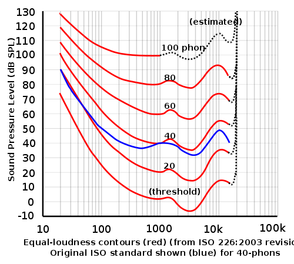

Loudness
Loudness is the subjective perception of the intensity of sound pressure waves
in the air. There are many different standards for measuring Loudness. Measurements
of loudness may be helpful, but the human ear is very complicated, making the
correspondence between any measurement and a person's perception of loudness imprecise.
The most common unit of measurement of loudness is the phon. (Notice: not
decibels.) Only under certain prescribed conditions will a phon correspond
to a decibel (specifically, a db-SPL).
Loudness depends on the frequency of the sound. The human ear is more sensitive to
mid-range frequencies than it is to low or high frequencies. This means that for a
given perception of loudness in phons one needs more power in low or high-frequency
sound-pressure waves. Loudness also depends on the duration of the sound. Short
brief sounds that happen in a generally quiet environment seem louder than droning
long-duration sounds that create a background of sound. Our ears seem to naturally
filter out the background sounds and direct our focus toward changing sounds.
Sound-Pressure Level (SPL) Defined
Sound-pressure level (SPL) is a more easily defined quantity than loudness is.
Sound-pressure level is the root-mean-square (RMS) deviation of a sound wave's pressure
from normal atmospheric pressure. (Yeah, loudness is a lot more complicated than
that!) The SI unit of sound-pressure is the pascal (Pa).
The threshold of human hearing is usually considered to be 20 μPa. (micro-pascals)
The threshold of pain (where discomfort is first noticeable, not outright pain) in
human hearing is usually considered to be 20 Pa. The maximum possible sound-pressure
level in the normal atmosphere near sea level is about 101000 Pa. It is a maximum
because 101000 is about 1 atmosphere of pressure. You cannot take more air molecules
out of a volume of space that is already lacking any air molecules! Air pressure
disturbances that go beyond 101000 Pa are possible, but these would best be
characterized as blast-waves, such as are associated with bombs or objects moving at
supersonic speeds. These can create very high positive pressures, but no pressures
lower than 0 Pa. Audio equipment cannot create the asymmetric pressure profile of
a blast-wave. Thus, it is fair to say that the highest possible sound-pressure level
is about 101000 Pa.
Because our ears respond logarithmically, we usually convert SPL in Pa to a logarithmic
scale. This is called the "decibel sound-pressure level" or "dB-SPL" ("dee, bee, ess,
pea, el"). It is twenty times the base-ten logarithm of the ratio of the sound-pressure
level in pascals to 20 μPa. The formula for conversion is:
dB-SPL = 20log10([SPL in Pa RMS]/[20 μPa])
The formula above requires the sound pressure level to be in "Pascals RMS."
To convert peak Pascals to Pascals RMS, as a rough estimate multiplying the peak
value by 0.707 will get you close most of the time. (An exact conversion is
waveform dependent and may require some application of calculus—a topic beyond
the scope of these pages.) The maximum possible peak
SPL, as explained above, is about 101000 Pa. To convert this to Pa RMS take the
square root of 101000. This gives about 71418 Pa RMS. Using the formula above
one finds that 71418 Pa RMS is equivalent to 191 dB-SPL.
Using the formula above we find these typical sound-pressure levels:
191 dB-SPL is the maximum possible sound pressure level in a normal atmosphere.
120 dB-SPL is the threshold of pain (discomfort—not outright pain).
110 dB-SPL The audience experience about 50 feet from the stage at a rock concert
85 dB-SPL A factory's production area. (OSHA regulations become an issue!)
80 dB-SPL Vacuum cleaner
60 dB-SPL Normal human speech about 3 feet from the person speaking
50 dB-SPL Quiet restaurant
40 dB-SPL Empty classroom with a fan or ventilator running
30 dB-SPL Empty movie theater
20 dB-SPL Outdoors in the countryside far from traffic, slight breeze, no birds, etc.
20 dB-SPL is also a desirable goal for an empty sanctuary or concert hall.
10 dB-SPL Two people 3 feet apart in an anechoic chamber.
They hear each other's breathing and their own heartbeats.
0 dB-SPL The sound of a pin dropping about 10 feet away in an anechoic chamber.
Quietness is important too
In the chart above 20 dB-SPL is mentioned as a goal for the quietness of an empty sanctuary.
The rumble of heating ventilating and air-conditioning equipment, the buzzing of lamp
ballasts, the bustle of traffic on the streets outdoors, and similar sounds can all significantly
distract from a sense of reverence and peacefulness while also obscuring the details of
softly performed music. Even achieving a quietness of 30 dB-SPL is non-trivial and will
require some deliberate effort to quiet down various aspects of the venue. If this is not
done, the level of quietness will likely be degraded to something above 35 dB-SPL in today's
world of noise.
SPL Is Not Loudness!
BUT. . . dB-SPL is not a good measure of loudness. Consider that using a "vacuum
cleaner" might seem louder than working in a "factory production area." As another example,
if you could hear the (normal) breathing of a person 3 feet away from you (easy if you
are in an anechoic chamber) you would think the breathing is unusually loud, but the same
breathing in most situations is completely "silent," masked by other sounds. Or you
might perceive that an empty classroom is just as quiet as the outdoors (far from traffic),
even though the dB-SPL levels are far apart. The power that a sound wave carries is
accurately expressed by dB-SPL, but our perception of that can be very different than the
dB-SPL numbers would predict.
As another example of loudness vs. dB-SPL, consider that the FCC requires that advertising
may not have an average dB-SPL level above that of the normal programming on radio and TV.
Just listen to some programming. Do some advertisements sound louder than
the programming? This is possible because loudness, being a complex issue, is not what
is measured and regulated. Voltages are actually what is regulated, limiting
sound-pressure levels.
Loudness depends on frequency and dB SPL
In the 1930's engineers at Bell Labs experimented to try to discover a
relationship between sound pressure level (in dB-SPL) and the resulting loudness. They
discovered that the frequency of the sound used for the test changed the results. They
proposed a set of "curves" now called the Fletcher-Munson curves. These curves are the
best information on this topic that are in the public domain. (Some companies have
done their own research and use different curves when designing their
products.) The Fletcher-Munson curves (red lines) are shown below. One of the characteristics
of the Fletcher-Munson curves is that a phon is defined as equal to a dB-SPL at
1000 Hz for short-duration sounds against a background of silence. The entire set of
Fletcher-Munson curves is only valid for short-duration sounds against a background
of silence. These curves also represent an average of all the samples from a large
number of young people who claim to have no problems with their hearing. The curves
do not account for the effects of age. Any individual person's hearing can deviate
significantly from these curves.

As explained above, the unit of loudness called the phon is derived from sound
pressure level in dB-SPL and from frequency. The Fletcher-Munson curves express this definition.
A related but non-logarithmic measure of loudness that one might occasionally encounter
is the sone. One sone is 40 phons, 2 sones is 50 phons, 4 sones is 60 phons, etc.
Each doubling of the sones adds (about) 10 phons to the perceived loudness of a sound. Phons
and dB SPL are the units usually encountered in audio engineering, so no further mention
of sones will be included here. (Sones are used in some industrial noise analysis
contexts.) There are still other units of loudness as well, but since they are not commonly
used in audio engineering, they will not be discussed here.
Loudness compensation
Because loudness depends on frequency, artificially changing the volume-level of a sound
will change the way we percieve the sound's tonal balance. Every time the "volume" control
of a radio is adjusted, our ears perceive the change as if the bass and treble controls of
the radio are also adjusted. Turning the volume up increases our relative perception of
bass and treble relative to the midrange frequencies. The sound seems more full and
pleasing to most people when the volume is turned up. Conversely, turning the volume down
decreases our ability to perceive the bass and treble sounds relative to the midrange
sounds and the sound seems thin and low-quality. Some radios and audio consumer-grade
audio equipment includes special tone-control circuits that automatically adjust themselves
as the volume control is adjusted to compensate for this nature of human hearing. Usually
the "volume" control is then labeled as a "loudness" control instead to inform the
user that a loudness compensation circuit is included. Loudness compensation is
usually included only on the more expensive consumer-grade audio equipment.
Loudness compensation is almost never included in professional equipment intended for
live-sound reinforcement. It would be inappropriate to include it in that context since
live-sound is the reference against which loudness compensation is supposed to adjust
itself.
The Fletcher-Munson curves show that human hearing has a more uniform
frequency response at high loudness levels. Suppose you attend a live worship service
in which the musical portions of the worship service are at about 80 phons of loudness.
Now you go home and listen to a recorded version of the very same worship service but
you set the volume control to provide about 60 phons of loudness. This is a very common
scenario. Usually when we listen to programming at home we listen at a lower loudness
level than that of the venue at the live event. The greater curvature of
the 60 phon curve compared to the 80 phon curve tells us that the lower-loudness
playback of the sound is not going to sound as good as the original sound, unless some
steps are taken at the playback equipment to compensate for the lower loudness.
For example it takes about 80 dB-SPL at a mid-range frequency such as 440 Hz
(A4 on a piano—the A above middle C) to make 80 phons of loudness.
But at the lower frequency of 55 Hz, (A1 on a piano—the lowest A on
a piano) it takes about 100 dB-SPL to achieve the same loudness. That is a 20 dB
difference. But if the music is now reproduced at 60 phons of loudness, then 440 Hz
requires 60 dB-SPL (20 dB-SPL less than the live sound) and 55 Hz requires 90 dB-SPL
(only 10 dB less than the live sound). Relatively speaking, the low notes in the
music will have lost 10 phons of loudness in the reproduced music if all frequencies
are reduced 20 dB-SPL from the live sound level. Thus hi-fidelity sound systems
have bass and treble tone controls so that you may boost the low and high frequencies
back to a perceived normal level. A few high-fidelity sound systems have a loudness
compensator circuit connected to the volume control to automatically boost the bass
and treble frequencies as the volume is turned down. Although perfect calibration
of such an automatic system is unlikely, this is usually a helpful feature, if it is
provided. Loudness compensation can usually be turned off, if desired, with a switch.
More about loudness compensation can be found at the Wikipedia: loudness compensation.
The types of tone-control adjustments found on home stereo equipment are not the types
of adjustments needed in a live-sound or live-stream mixing environment. They are
appropriate for playback so that the various listeners may adjust the
tone to their liking based on the loudness levels they are using. These adjustments
should not be baked into the live-stream or a recording mix because every listener's
situation will be different. Tone control adjustments such as used in home sound
systems most certainly will not sound pleasing in live-sound reinforcement because
the live sound is by definition at the loudness level of the live sound! Tone
control for live-sound is an entirely different topic, called equalization.
(More will be added to this web site on equalization in the
future, hopefully.)
Loudness Fatigue
Loudness Fatigue, also known as listener fatigue, auditory fatigue, ear fatigue,
and other similar names, has two aspects to it.
First, there are some muscles in the inner ear that allow your ear to adapt to various
sound-pressure levels. In a quiet environment, probably below about 40 dB-SPL, these
muscles completely relax and allow the maximum motion from the diaphragm in the ear to
be transmitted into the cochlea. As the average sound-pressure level of environment
increases these muscles tense up and damp out a portion of the sound to reduce the
pressure waves transmitted into the cochlea. This muscular action in your ear is
entirely subconscious and unnoticed. This is one reason why various sound-pressure
levels do not relate so directly to loudness. Our ears have a sort of internal
protection mechanism to muffle loud sounds.
After a long duration of loud sounds
these muscles fatigue. Their protective value is reduced and damage from excessive
pressure waves begins to happen to the cochlea's stereocilia. Not only is there
damage, but the details of the sound are not properly perceptible under these conditions either.
If a person operating a mixer board suffers this type of loudness fatigue, this person
will be handicapped in creating a good mix. Usually taking a break from the loud
environment for 15 minutes or more will restore some quality of hearing. Usually
most of the damage will heal itself in a matter of hours or a day or so, but some
of the damage can be permanent.
When muscles near your brain tense up the electrical
activity of the related nerves creates a whining sound in your ears. Try biting your
teeth together hard while listening. You will hear the whine. If you hear this
whining sound even when you know it is silent around you and all your facial
muscles are relaxed, you may be hearing the muscles in your ear! You should protect
your ears by minimizing your exposure to sounds that cause these muscles to tense
up a lot and for long durations. It is not good to let these muscles get fatigued.
Sometimes when people speak of loudness fatigue, these muscles in your ears are what
they are referring to.
By the way, those
under the age of three might not have such fully developed protective muscles in their
ears. If you see toddlers in the congregation with their hands over their ears, it
is too loud! (Sadly, I have seen this in certain loud praise-and-worship situations.)
Secondly, research has shown that loud sounds over a duration of time cause a general
bodily fatigue, in the sense that one loses focus on the task at hand, whatever it is,
and just wants to take a break and rest or sleep. If a sermon is blasted too loudly
at the congregation, this type of fatigue can make it harder for the congregation to
listen attentively. This is a second way in which loudness fatigue presents itself.
Loudness fatigue, in either form, makes it tempting to keep turning up the volume.
If one is having trouble hearing detail in the mix, the natural instinct is to turn up
the sound in the headphones. It will work briefly, but then the fatigue will set back
in. If the congregation does not seem to be paying attention, heads are nodding, turning
up the volume will wake 'em up—briefly. In any of these situations it is best to
recognize what is happening. If necessary, take your brief advantage of louder sound to get over
the moment, but then the best thing to do is to gently and slowly back the volume down
to a lower level that it was. Everyone will feel a sense of refreshment!
The matter of loudness fatigue also relates to dynamics in music. It is not a
good idea to ride a fader with the goal of keeping the loudness totally uniform. Usually,
performance levels are well above 50 dB-SPL and the event is more than 15 minutes long so
loudness fatigue is a factor to minimize. Let the musicians swell and fade their sound,
maybe even help exaggerate that ever so slightly. The softer moments will help avoid
loudness fatigue. Especially if you know that a loud crescendo is coming, plan for some
relaxation ahead of it. Over the course of a verse (e.g. of a hymn) slowly ramp down
the faders achieving a 3 or 6 dB net reduction over the entire span of the verse.
Then as the crescendo starts, slowly raise the faders back up to normal or maybe a few dB
above normal, saving about 2 dB for the final coda. This will usually be more
satisfactory than doing nothing or only pushing the fader up above normal. Because you
will have allowed the listener's ears to relax and rest a little in preparation for the
crescendo, the crescendo will sound appropriately louder, whereas doing nothing or
just making it louder will cause the ear's muscles to damp out much of the perception
of the crescendo. Similarly, if you see a quiet hymn of confession coming, pull back the
relevant faders maybe 3 dB just before the hymn starts to provide a sense of restful
attentiveness. Take advantage of that moment. (It is important to be careful that
the volume changes agree with the music and do not seem obvious.)
Within a musical mix it is not necessarily desirable to maintain the same mix throughout
a hymn or song. Especially if there is a solo part, there is an opportunity to reduce
listener fatigue. For a solo part it is usually good to push up the fader on the soloist
to help the vocal to ride over the rest of the mix. But you can also pull down the
group master (or if not using groups, use the main master faders) about the same amount
at the same time to maintain the overall dB-SPL level while leaving the perception
of the soloist being louder. Even if there is no solo part, you can make a choice to
slightly solo one different vocalist on each verse and then maybe slightly solo an
instrument on the refrain or chorus. If you do this in a coordinated and subtle way
(keeping changes to just 3 or 6 dB), so that you do not keep pushing up the dB-SPL
level, you will avoid increasing the listener fatigue factor and the whole mix will
sound louder and better.
Use your ears to judge loudness
The "VU" meters on a mixer board relate more to dB-SPL than to loudness. For technical
reasons the VU meters need to be bouncing in the normal ranges, but this has little to
do with the artistic value of the mix. The type of programming matters. As one example,
an electric guitar that has been processed with a fuzz box can sound much louder than
the vocalist, even if both are peaking at the same levels on a VU meter. Similarly,
a vocalist can swamp out some instruments, such as a triangle, even if the meters say
the levels are about equal. Use your ears and even your sense of fatigue as the judge
of what sounds good and well-balanced.
|